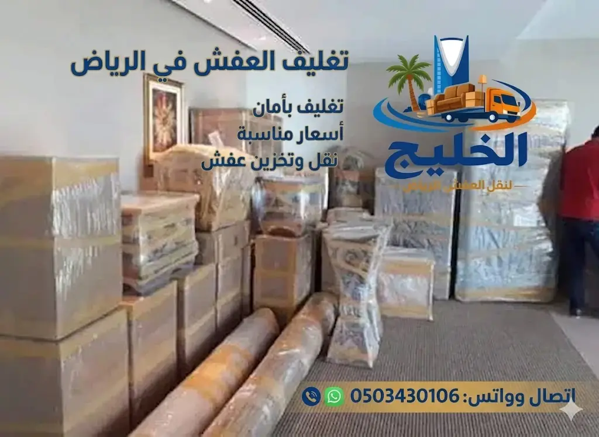

تغليف عفش بالرياض | أفضل شركة تغليف أثاث بالرياض
تعد عملية تغليف عفش بالرياض الركيزة الأساسية والخط الدفاعي الأول لحماية ممتلكاتك وأثاثك المنزلي والمكتبي أثناء الانتقال أو التخزين. تقدم لكم شركة نقل عفش الرياض الرائدة "شركة الخليج" منظومة حماية متكاملة تعتمد على أحدث تقنيات مواد التغليف العالمية وبأعلى مستويات الأمان والدقة مع فريق عمل متخصص يمتلك خبرة تتجاوز 15 عاماً في سوق العاصمة.
1. الدليل الشامل والأول لخبير تغليف العفش بالرياض
إن الانتقال السكني أو المكتبي في العاصمة الرياض يعتبر خطوة تتطلب تخطيطاً دقيقاً وعناية فائقة، ولا سيما عندما يتعلق الأمر بحماية الأثاث والممتلكات الشخصية من المخاطر المحتملة. تشهد مدينة الرياض توسعاً عمرانياً هائلاً وطرقاً رئيسية سريعة، بالإضافة إلى الظروف الجوية الخاصة من ارتفاع درجات الحرارة والغبار الموسمي. من هذا المنطلق، لم تعد عملية تغليف عفش بالرياض مجرد خطوة اختيارية أو تكميلية، بل هي الأساس الجوهري الذي يتوقف عليه سلامة العفش بالكامل وضمان وصوله إلى الوجهة الجديدة بنفس الحالة الفابريكة دون تسجيل أي خدش أو كسر.
تضع شركة نقل عفش بالرياض (شركة الخليج) بين يديك هذا الدليل الشامل ليكون مرجعك الموثوق قبل اتخاذ قرار النقل أو التخزين. نحن ندرك تماماً أن قطع الأثاث ليست مجرد أغراض مادية، بل تمثل قيمة مالية وعاطفية كبيرة لأصحابها، بدءاً من غرف النوم الخشبية الفاخرة، والأطقم الكلاسيكية، مروراً بالأجهزة الكهربائية والالكترونية الحساسة مثل الشاشات العملاقة والثلاجات الحديثة، وصولاً إلى التحف والنجف والقطع الزجاجية الفريدة.
تشير الإحصائيات الميدانية في مجال نقل العفش إلى أن أكثر من 88% من الأضرار والتلفيات التي تصيب الأثاث أثناء عمليات التحميل أو السير على الطرق تنتج بالأساس عن التغليف السيئ، أو استخدام مواد تعبئة رديئة أحادية الطبقة لا تتحمل الاهتزازات. ولذلك، فإن الاعتماد على نقل اثاث الرياض لدى مؤسسة متخصصة ومحترفة يضمن لك تطبيق أفضل المعايير الهندسية في التعبئة والتغليف، وتوفير خامات ذات كفاءة عالية تمتص الصدمات وتمنع الأتربة، مما يوفر عليك مبالغ طائلة قد تُصرف في إصلاح أو استبدال القطع المتضررة.

تعتمد منظومة تغليف أثاث بالرياض في شركة الخليج على المزاوجة بين الخامات فائقة الجودة والمهارة البشرية العالية. حيث يتلقى فنيو التغليف لدينا تدريبات دورية مكثفة على كيفية التعامل مع مختلف أبعاد وزوايا الأثاث، واستخدام الأدوات الحديثة مثل ماكينات الشد الحراري ومسدسات الشريط الاصطناعي المقوى. كما نحرص على تقديم خدماتنا لتغطي الشقق الفندقية، الفلل، القصور، والمكاتب الشركاتية الكبرى بنفس درجة العناية والاحترافية.
علاوة على ذلك، لا تقتصر فوائد تغليف الأثاث على منع الخدوش السطحية فحسب، بل يمتد دورها إلى حماية المنسوجات والأقمشة الفاخرة للكنب والمجالس من الاتساخ أو امتصاص الروائح والأتربة أثناء النقل في سيارات الدينا. كما تتيح عملية التغليف المحكمة تصنيف القطع بوضوح ووضع ملصقات ترميزية تسهل عملية إعادة التركيب والتوزيع داخل المقر الجديد بأعلى درجات الانسيابية والسرعة. إذا كنت تبحث عن الأمان الكامل والاحترافية المطلقة، فإن خدماتنا في نقل العفش بالرياض هي خيارك الأول والموثوق دائماً.
2. أنواع خامات ومواد تغليف الأثاث بالرياض وكيفية اختيار الأنسب
تتعدد خامات مواد التغليف المتاحة في الأسواق، ولكن استخدام المادة المناسبة للقطعة المناسبة هو السّر الحقيقي خلف نجاح عملية التغليف. نحن في افضل شركة نقل عفش بالرياض نستخدم فقط الخامات ذات المواصفات القياسية العالمية التي أثبتت جدارتها في حماية ممتلكات العملاء. تشمل هذه الخامات الكرتون المقوى متعدد الطبقات، البلاستيك الفقاعي الهوائي، النايلون الاستريتش، بطاطين التغليف القطنية السميكية، ورغوة الفوم العازلة.
أولاً: الكرتون المقوى (Corrugated Cardboard): يعتبر الكرتون المقوى ذو الطبقتين أو الثلاث طبقات (Double & Triple Wall) من أهم الخامات المستخدمة في تغليف الأجزاء الخشبية لغرف النوم والمكاتب. يتميز بقدرته العالية على تحمل الضغط والأوزان الثقيلة، ويتم قصه وتشكيله ليلائم حواف الطاولات والخزائن، مما يمنع حدوث أي انبعاجات أو تكسر في الأطراف الحادة أثناء التحميل والمرور عبر الممرات الضيقة.
ثانياً: البلاستيك الفقاعي (Bubble Wrap): يعتبر الخيار المثالي لحماية الأجهزة الإلكترونية والشاشات والتحف والأواني الزجاجية. يحتوي هذا البلاستيك على آلاف الفقاعات الهوائية المضغوطة التي تعمل كمصدات صدمات طبيعية، حيث يمتص أي اهتزازات ناتجة عن حركة السيارات على الطرق، ويضمن عدم وصول الضغوط الخارجية إلى الأجسام الحساسة الملفوفة بداخلها.

ثالثاً: النايلون الاستريتش الممدد (Stretch Film): يتميز النايلون الاستريتش بمرونته العالية وقدرته على الالتصاق الذاتي الذكي. يُستخدم بشكل أساسي لتثبيت طبقات التغليف الكرتونية والفقاعية، بالإضافة إلى عزل الأثاث تماماً عن الهواء الخارجي والأتربة والرطوبة. كما أنه يُعد رائعاً في تغليف المجالس والكنب والمفروشات لحمايتها من التلوث أثناء مسار الانتقال.
رابعاً: بطاطين التغليف الثقيلة والواقيات الفومية (Moving Blankets & Foam Protectors): تُستخدم البطاطين القطنية المبطنة لتغليف القطع الخشبية الأنتيك والمطليات الفاخرة لمنع حدوث أي احتكاك حراري أو خدوش دقيقة، بينما تُوضع مصدات الفوم الزاويّة على زوايا الشاشات والمرايا والرخام لحمايتها من الارتطام المباشر. للمزيد من التفاصيل حول الخامات والتطبيقات، يمكنك مراجعة دليلنا في خدمات تغليف ونقل الأثاث.
3. طرق وتكنيكات تغليف الأثاث الفاخر والأجهزة والمقتنيات الثمينة
تتطلب بعض قطع الأثاث والمقتنيات معاملة خاصة جداً وتكنيكات تغليف متطورة تفوق الطرق التقليدية، وذلك إما لارتفاع قيمتها المالية أو لحساسيتها الشديدة للكسر أو التلف. نحن في شركة نقل عفش الرياض نطبق بروتوكولات تغليف هندسية صارمة تُعرف بنظام التغليف الطبقي الثلاثي (Triple-Layer Packaging System) للقطع الثمينة.
تغليف الشاشات والأجهزة الكهربائية: تُعتبر الشاشات الحديثة (OLED / QLED) من أكثر الأجهزة عرضة للتلف نتيجة أي ضغط خفيف على سطح الزجاج. يرتكز تكنيك تغليف الشاشات لدينا على وضع طبقة أولية من الورق النايلوني المضاد للاستاتيكية، ثم إحاطة الشاشة بالكامل بألواح الفوم المقوى من كافة الاتجاهات، يعقبها لف الشاشة بالبلاستيك الفقاعي السميك، وأخيراً وضعها داخل صندوق كرتوني مخصص ومزدوج الجدران مع تثبيتها بالفواصل الهوائية لمنع أي حركة داخلية أثناء السير.
تغليف غرف النوم والمطابخ: قبل البدء بتغليف غرف النوم، يقوم نجارو المؤسسة المتخصصون بفك الأبواب والأرفف والسرائر بدقة، ثم يتم تغليف كل لوح خشبي على حدة باستخدام الكرتون المقوى والاستريتش، مع تجميع المفصلات والبراغي في أكياس مخصصة ومثبتة بالقطع الخاصة بها. أما بالنسبة للمطابخ، فنوفر خدمات فك وتركيب أثاث المطبخ وايكيا مع تغليف الرخام بالبطاطين السميكية وتعبئة الأواني والكرستالات في صناديق كرتونية تحتوي على فواصل قماشية تمنع تلامس القطع الزجاجية ببعضها.
تغليف التحف والثريات واللوحات
يتم بناء صناديق خشبية مخصصة (Custom Wooden Crates) للثريات واللوحات الزيتية الثمينة، حيث تُعلق الثريا داخل الصندوق الخشبي من المنتصف وتُحاط بالفوم الهوائي لضمان عدم تعرض فروعها الكريستالية لأي ضغط أو اهتزاز.
تغليف الكنب والمجالس الجلدية
يتم وضع أغطية قماشية مسامية تتيح للجلد التنفس لمنع حدوث أي تعرق أو تشقق حراري، يعقبها طبقة من النايلون الاستريتش لحماية القماش من الأتربة والرطوبة أثناء النقل.
إن الاهتمام بهذه التفاصيل الدقيقة هو ما جعل شركة نقل عفش بالرياض تتبوأ الصدارة في محركات البحث وفي قلوب عملائها، حيث نضمن استلامك لكل قطعة في بيتك الجديد وهي بحالتها الأصلية دون أي تغير أو تلف.
4. الخطوات المنهجية لتغليف العفش قبل النقل والتخزين بالرياض
تسير عملية تغليف عفش بالرياض وفق استراتيجية خطوات محددة ومدروسة تضمن إنجاز المهام بأعلى سرعة وأقصى درجات النظام. لا تعمل شركة الخليج بطريقة عشوائية، بل نتبع جدولاً تشغيلياً خاضعاً لإشراف مهندسي وملاحظي الجودة.
المعاينة الميدانية وجرد المقتنيات
يصل خبير المعاينة إلى موقع العميل لتفقد كمية الأثاث وتحديد نوع الخامات المطلوبة وعدد الصناديق الكرتونية، بالإضافة إلى تجهيز المعدات الخاصة والعمالة المناسبة لحجم العمل.
الفرز والتصنيف وتنظيف الأثاث
يتم مسح الأثاث وإزالة الأتربة السطحية قبل التغليف، وتصنيف المحتويات إلى أغراض قابلة للكسر، ملابس، أجهزة، وأخشاب، لضمان اختيار وسيلة التغليف الملائمة لكل فئة.
الفك الاحترافي بواسطة نجارين وفنيين
يقوم فريق النجارين بفك دولاب غرف النوم، الأسرة، والمكاتب، بينما يقوم فنيو التكييف بفك المكيفات وفق بروتوكولات آمنة، تمهيداً لبدء مرحلة التغليف المباشر.
التغليف متعدد الطبقات والإحكام بالشريط اللاصق
تُغلف كل قطعة بالمواد المخصصة لها (كرتون، فقاعات، استريتش) وتُثبت الأطراف بشريط لاصق عالي الالتصاق لا يترك أي أثر صمغي على أسطح الأثاث.
الترميز بالملصقات وشفرات الألوان
يتم كتابة محتويات كل صندوق والجهة المنتمي إليها (غرفة النوم الرئيسية، المجلس، المطبخ) على ملصقات واضحة، مما يسهل عملية التفريغ والترتيب في المقر الجديد.
بعد إتمام هذه الخطوات الخمس، يصبح عفشك جاهزاً للتحميل داخل شاحناتنا في خدمة دينا نقل عفش بالرياض المجهزة بأربطة تثبيت داخلية تضمن عدم تحرك الصناديق أثناء الطريق.
5. تغليف العفش للتخزين طويل الأجل مقابل تغليف النقل السريع
يغفل الكثير من العملاء عن وجود اختلافات جوهرية وهيكلية بين تغليف الأثاث المخصص للنقل الفوري داخل أحياء الرياض وبين التغليف المخصص للتخزين لفترات طويلة تمتد لأشهر أو سنوات داخل المستودعات. إن فهم هذا الفرق يحمي عفشك من مخاطر التلف المتراكم بفعل عوامل الزمن والبيئة.
تغليف النقل السريع (Transit Packing): يهدف هذا النوع بشكل رئيسي إلى امتصاص الصدمات المفاجئة والاحتياط من الاحتكاكات التي تترافق مع عملية التنزيل والتحميل والسير في الشوارع. تركز خاماته على البلاستيك الفقاعي والكرتون والنايلون المقوى، ويكون مصمماً ليتم فكه خلال ساعات أو أيام قليلة من وصول العفش.
تغليف التخزين طويل الأجل (Storage Packing): يتطلب هذا النوع حماية مضاعفة ضد أربعة أعداء رئيسيين: الرطوبة الساكنة، الغبار الناعم، التغيرات الحرارية، والحشرات. يشتمل تغليف التخزين لدينا على استخدام رولات النايلون المعزول كلياً، مع وضع أكياس هيدروجيل (Silica Gel) داخل الصناديق والأنسجة لامتصاص أي رطوبة جوية قد تتكون مع الوقت. كما يُرش الأثاث الخشبي بمواد آمنة عديمة الرائحة طاردة للنمل الأبيض والحشرات قبل إغلاقه بالكامل.
تقدم مؤسستنا خدمات متميزة في تخزين اثاث بالرياض في مستودعات مؤمنة ومكيفة، حيث يتم رفع العفش المغلف على طبالي خشبية (Pallets) تمنع ملامسته المباشرة للأرضيات، مما يضمن بقاء أثاثك مخزناً لسنوات طويلة ويعود إليك بنفس الجودة والنظافة.
6. أبرز أخطاء تغليف العفش وكيف تتجنبها شركة الخليج
تتسبب الممارسات الخاطئة وغير الاحترافية في التغليف الذاتي أو الاستعانة بعمالة غير مدربة في حدوث خسائر فادحة للأثاث. نلخص لكم فيما يلي أبرز الأخطاء الشائعة وكيف تتفاداها شركة نقل عفش بالرياض:
الخطأ: استخدام كراتين رديئة أو أحادية الطبقة
التمزق المفاجئ للصناديق أثناء الحمل وسقوط المحتويات الزجاجية.
✓ حل شركة الخليج: استخدام كراتين مقواة 3 طبقات مصممة للأوزان الثقيلة.
الخطأ: لصق الشريط اللاصق على الخشب مباشرة
تقشر دهانات الخشب وترك بقع صمغية يصعب إزالتها.
✓ حل شركة الخليج: وضع طبقة فوم عازلة أولاً ثم التثبيت فوق مواد التغليف.
الخطأ: حشو الكراتين بأوزان زائدة عن طاقتها
صعوبة حمل الصندوق وانبعاج قاعدته وتلف الأغراض المعبأة.
✓ حل شركة الخليج: موازنة الأحمال والالتزام بحد أقصى 25 كجم لكل صندوق.
الخطأ: إهمال تغليف حواف وزوايا الأثاث
انكسار زوايا الخشب والرخام عند الممر بالمداخل والجدران.
✓ حل شركة الخليج: تركيب واقيات زوايا من الفوم والكرتون السميك.
7. سكشن مقارنات شاملة: التغليف الاحترافي مقابل التغليف الفردي ومقارنة الخامات
لكي تتضح الرؤية بشكل كامل أمام عملائنا الكرام، نضع بين أيديكم مقارنة شاملة وعلمية توضح الفوارق الجوهرية بين اعتمادك على شركة نقل عفش الرياض متخصصة وبين التغليف العشوائي الفردي، بالإضافة إلى مصفوفة مقارنة الخامات.
مقارنة بين التغليف الاحترافي من شركة الخليج والتغليف الفردي الذاتي
| وجه المقارنة | تغليف شركة الخليج الاحترافي | التغليف الفردي / الذاتي |
|---|---|---|
| نسبة حماية الأثاث | 99.8% (حماية متكاملة ضد الصدمات) | 50% - 60% (عرضة للتلف والخدش) |
| نوعية الخامات المستخدمة | كرتون 3 طبقات، فقاعات مقواة، فوم، استريتش | كرتون مستعمل، اكياس بلاستيك عادية، أشرطة ضعيفة |
| الوقت المستغرق | 2 - 4 ساعات فقط (طاقم متكامل) | 2 - 4 أيام (إرهاق وتضييع للوقت) |
| الضمان والتعويض | عقد ضمان رسمي يتكفل بأي خسائر | لا يوجد أي ضمان (تحمل الخسارة كلياً) |
| فك وتركيب القطع | بواسطة نجارين وفنيين متخصصين | اجتهاد شخصي قد يسبب تلف المفصلات |
مصفوفة خصائص واستخدامات مواد التغليف الرئيسية
| خامة التغليف | الميزة الرئيسية | الاستخدام الأمثل | درجة الأمان |
|---|---|---|---|
| البلاستيك الفقاعي | امتصاص الصدمات العالية | الشاشات، الزجاج، الأجهزة | ممتازة (98%) |
| الكرتون المقوى | مقاومة الضغط والأحمال | الأخشاب، الكتب، الأواني | ممتازة (95%) |
| النايلون الاستريتش | العزل التام للأتربة والماء | الكنب، المجالس، السجاد | جيدة جداً (90%) |
| بطاطين التغليف | حماية السطح من الخدش | الأنتيكات والمطليات الفاخرة | ممتازة (99%) |
8. سكشن أسعار تغليف العفش بالرياض وعوامل تحديد التكلفة
تعتمد فلسفة التسعير في شركة الخليج على الشفافية المطلقة وتقديم أعلى قيمة مقابل السعر. نحن نوفر أرخص اسعار تغليف العفش بالرياض مع الحفاظ التام على أقصى مستويات الجودة والحماية. فيما يلي جدول تقريبي يبين أسعار خدمات التغليف حسب حجم السكن ونوع الخدمة:
| نوع الشقة / السكن | نطاق التكلفة التقريبي | تفاصيل تفكيك وتغليف العفش |
|---|---|---|
| شقة صغيرة (غرفتين ونوم) | 250 - 450 ريال | تغليف كرتوني وبلاستيكي متكامل شامل الفك |
| شقة متوسطة (3 - 4 غرف) | 500 - 800 ريال | تغليف شامل لجميع الغرف والمطبخ والأجهزة |
| فيلا كاملة / دوبلكس كبير | 900 - 1500 ريال | خدمة VIP تغليف شامل + صناديق خشبية للتحف |
| تغليف غرفة نوم واحدة مستقلة | 100 - 180 ريال | فك وتغليف الدولاب والسرير والتسريحة بالكرتون |
العوامل الأساسية المؤثرة في تحديد سعر تغليف الأثاث:
- حجم وكمية قطح الأثاث المراد تغليفها وعدد الصناديق المطلوبة.
- نوعية الخامات المستخدمة (تغليف اقتصادي، تغليف قياسي، أو تغليف فاخر مع صناديق خشبية).
- طلب خدمات إضافية مثل تركيب غرف نوم ايكيا أو فك وتركيب المكيفات.
- مدة التخزين المطلوبة في حال كان التغليف بغرض التخزين في مستودعاتنا.
يسعدنا تقديم خصم خاص يصل إلى 35% عند طلب خدمة التغليف المدمجة مع نقل شقق بالرياض. تواصل معنا فوراً للحصول على مقايسة مجانية.
9. سكشن الأحياء والمدن التي نخدمها في الرياض والمملكة
تمتلك شركة الخليج أسطولاً متطوراً ومراكز خدمة تنتشر في كافة قطاعات وأحياء العاصمة الرياض، مما يتيح لنا الاستجابة السريعة والوصول إلى موقع العميل في وقت قياسي. نحن نغطي الأحياء التالية بكفاءة متناهية:
أحياء شمال الرياض
حي حطين، الملقا، الصحافة، النرجس، الياسمين، العارض، العقيق، الغدير، النخيل، الربيع، الوادي، القيروان.
تغليف عفش شمال الرياض ←أحياء شرق الرياض
حي الروضة، الخليج، الحمراء، قدس، اشبيلية، المونسية، اليرموك، قرطبة، الشهداء، النهضة، الريان.
تغليف عفش شرق الرياض ←أحياء وسط الرياض
حي العليا، السليمانية، المربع، الملز، الناصرية، الضباب، الوزارات، الفاخرية.
تغليف عفش وسط الرياض ←أحياء غرب الرياض
حي طويق، ظهرة لبن، العريجاء، البديعة، الشبرا، السويدي، الدرعية، جامعة الملك سعود.
تغليف عفش غرب الرياض ←أحياء جنوب الرياض
حي الشفاء، العزيزية، الحائر، الدار البيضاء، الشعلان، بدر، بن تركي.
تغليف عفش جنوب الرياض ←المدن والمحافظات المجاورة
محافظة الخرج، الدرعية، المجمعة، المزاحمية، ثادق، رماح، حوطة بني تميم.
خدمات النقل بين المدن ←سواء كنت تسكن في برج سكني فاخر في حي العليا أو فيلا حديثة في النرجس، فإن فريق شركة نقل عفش بالرياض يصلك مع كافة أدوات مواد التغليف والعمالة الفنية الجاهزة للعمل فوراً.
10. سكشن الأسئلة الشائعة حول تغليف العفش بالرياض (15 سؤالاً وتفاصيلها)
نقدم لكم إجابات تفصيلية وشاملة لأكثر 15 سؤالاً تداولاً واهتماماً بين العملاء في الرياض حول خدمات تغليف الأثاث والعفش:
احصل على تغليف عفش احترافي وآمن اليوم
تواصل مع فريق شركة الخليج الآن واستمتع بخصم 35% على خدمات التغليف والنقل المتكاملة بكافة أحياء مدينة الرياض.